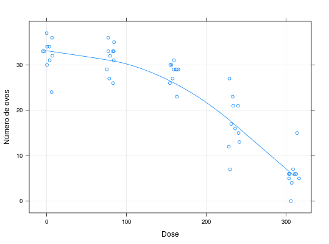

Dados provenientes de um típico estudo dose-resposta. 50 animais Ceriodaphnia dubia (pequeno invertebrado de água doce) foram submetidos a 5 diferentes dosagens do herbicida Nitrofen (10 animais expostos a cada nível de dosagem) e, após 3 ninhadas, observou-se o número total de ovos eclodidos.
Um data.frame com 50 observações e 2 variáveis.
dosenovosPAULA (2004), Exercício 4.6.20, pág. 349.
A variável dose foi tomada como valor numérico,
devido a natureza da variável. Todavia, se for de interesse na
análise a comparação das médias dos números de ovos eclodidos,
pode-se considerá-la como fator de cinco níveis (0, 80, 160, 235
e 310 mg/l) e estimar as médias para cada nível
data(PaulaEx4.6.20)#> Warning: data set ‘PaulaEx4.6.20’ not foundstr(PaulaEx4.6.20)#> 'data.frame': 50 obs. of 2 variables: #> $ dose : int 0 0 0 0 0 0 0 0 0 0 ... #> $ novos: int 37 32 34 33 36 34 33 30 24 31 ...aggregate(novos ~ dose, FUN = function(x) c(mean(x), var(x)), data = PaulaEx4.6.20)#> dose novos.1 novos.2 #> 1 0 32.400000 13.155556 #> 2 80 31.500000 10.722222 #> 3 160 28.300000 5.566667 #> 4 235 17.200000 34.844444 #> 5 310 6.000000 13.777778library(lattice) xyplot(novos ~ dose, data = PaulaEx4.6.20, jitter.x = TRUE, xlab = "Dose", ylab = "Número de ovos", type = c("p", "g", "smooth"))